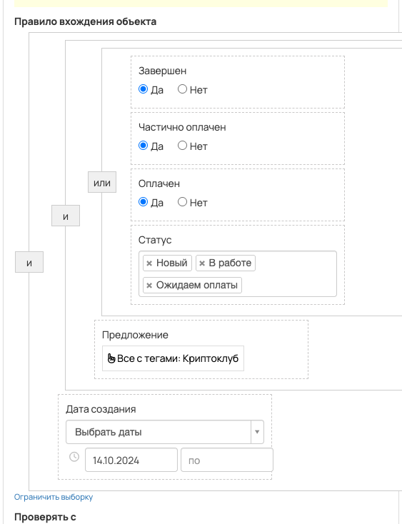
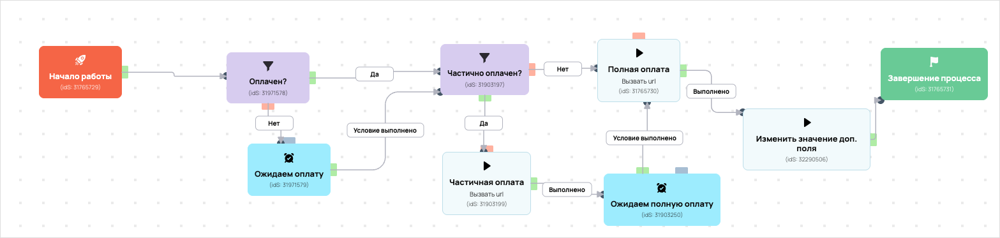

[AMO] Оплатил криптоклуб, передача в амо
- ID процесса:
1823888 - Объект: Заказы
- Статус: Не запущен
Описание из GetCourse
30.06.2026. Подробный ход процесса GetCourse:
Главное: В процесс попадают заказы по правилу: ID объектов.
Процесс работает с объектом GetCourse: Заказы. Текущий статус процесса: Не запущен.
Как идет процесс внутри GetCourse:
- Схема состоит из 14 блоков и 22 переходов.
Конец подробного хода процесса GetCourse.
База - https://vakas-tools.ru/account/base/amo.php?base_id=60358 Все заказы с крито клубом. Частичный или оплаченный. Если частичный то ожидаем полную оплату. Если полная то завершаем процесс. В частичной или полной оплате проходя так же отправка в амо на нужные этапы
Понятное описание процесса
- Процесс работает с объектом GetCourse: Заказы. Текущий статус процесса: Не запущен.
- На вход попадают данные так: В процесс попадают заказы по правилу: ID объектов.
- Внутри схемы есть дополнительные проверки/ожидания: 4. Основные блоки: «Частично оплачен?»; «Ожидаем полную оплату»; «Оплачен?»; «Ожидаем оплату».
- Дальше процесс делает прямые вызовы Vakas: 2. Напрямую задействованы базы: 60358.
- Передача: 60358. Оплатил криптоклуб, передача в амо: Оплаты и заказы. Передаются параметры:
number,id,order_id,positions,costMoney,leftCostMoney,payedMoney,status,paymentLink,firstNameи другие. - Что происходит в amoCRM: На входе в этап КРИПТОКЛУБ -> Новый заказ [76504486] база ищет дубль и при необходимости переводит найденную сделку в рабочий этап.
Ход процесса в GetCourse
- Схема состоит из 14 блоков и 22 переходов.
- По типам: стартов 1, условий/ожиданий 4, вызовов URL 7, изменений полей 1, финалов 1.
Блоки процесса: что делают и зачем нужны:
- Блок
31765729«Начало работы» (старт). Что делает: Запускает выполнение схемы для объекта, который попал под правило входа процесса. Зачем нужен: Нужен как точка входа: от него GetCourse начинает движение объекта по схеме. Дальше: если результат «Выполнено», идет в «Оплачен?». - Блок
31971578«Оплачен?» (условие). Что делает: Проверяет условие: Частично оплачен (да) или Оплачен (да). Зачем нужен: Нужен, чтобы разделить поток: подходящих пользователей/заказы отправить дальше, неподходящих перевести на другую ветку или завершить. Дальше: если результат «Нет», идет в «Вызвать url — заменить URL»; если результат «Да», идет в «Частично оплачен?». - Блок
31903197«Частично оплачен?» (условие). Что делает: Проверяет условие: Частично оплачен (да) и Предложение (все с тегами: Криптоклуб). Зачем нужен: Нужен, чтобы разделить поток: подходящих пользователей/заказы отправить дальше, неподходящих перевести на другую ветку или завершить. Дальше: если результат «Нет», идет в «Полная оплата»; если результат «Да», идет в «Частичная оплата». - Блок
31903199«Частичная оплата» (вызов URL). Что делает: Передает в Vakas: 60358. Оплатил криптоклуб, передача в амо, канал «Оплаты и заказы» (GET); параметры:number,id,order_id,positions,costMoney,leftCostMoney,payedMoney,status,paymentLink,firstName,lastName,name,email,phoneи другие; timeout 300 сек. Зачем нужен: Нужен, чтобы передать подходящий объект в 60358. Оплатил криптоклуб, передача в амо; дальше На входе в этап КРИПТОКЛУБ -> Новый заказ [76504486] база ищет дубль и при необходимости переводит найденную сделку в рабочий этап. Дальше: если результат «Ошибка», идет в «n8n fail после частичной оплаты»; если результат «Выполнено», идет в «n8n success после частичной оплаты». - Блок
43509869«n8n success после частичной оплаты» (вызов URL). Что делает: Вызывает внешний URL: testn8n.easydrafting.ru/webhook/gc-vakas-retry-events (POST); параметры:event,clientED,gcDomain,action,process_id,process_name,entity_type,object_id,order_id,user_id,name,email,phone,error_message; timeout 10 сек. Зачем нужен: Нужен, чтобы процесс GetCourse передал данные во внешний сервис testn8n.easydrafting.ru. Дальше: если результат «Ошибка», идет в «Ожидаем полную оплату»; если результат «Выполнено», идет в «Ожидаем полную оплату». - Блок
31903250«Ожидаем полную оплату» (ожидание условия). Что делает: Останавливает объект в ожидании, пока выполнится условие: Оплачен (да) и Предложение (все с тегами: Криптоклуб). Зачем нужен: Нужен, чтобы не отправлять объект раньше времени: процесс ждет нужное событие, заказ, сегмент или другое условие. Дальше: если результат «Условие выполнено», идет в «Полная оплата». - Блок
31765730«Полная оплата» (вызов URL). Что делает: Передает в Vakas: 60358. Оплатил криптоклуб, передача в амо, канал «Оплаты и заказы» (GET); параметры:number,id,order_id,positions,costMoney,leftCostMoney,payedMoney,status,paymentLink,firstName,lastName,name,email,phoneи другие; timeout 300 сек. Зачем нужен: Нужен, чтобы передать подходящий объект в 60358. Оплатил криптоклуб, передача в амо; дальше На входе в этап КРИПТОКЛУБ -> Новый заказ [76504486] база ищет дубль и при необходимости переводит найденную сделку в рабочий этап. Дальше: если результат «Ошибка», идет в «n8n fail после полной оплаты»; если результат «Выполнено», идет в «n8n success после полной оплаты». - Блок
43509868«n8n success после полной оплаты» (вызов URL). Что делает: Вызывает внешний URL: testn8n.easydrafting.ru/webhook/gc-vakas-retry-events (POST); параметры:event,clientED,gcDomain,action,process_id,process_name,entity_type,object_id,order_id,user_id,name,email,phone,error_message; timeout 10 сек. Зачем нужен: Нужен, чтобы процесс GetCourse передал данные во внешний сервис testn8n.easydrafting.ru. Дальше: если результат «Ошибка», идет в «Изменить значение доп. поля»; если результат «Выполнено», идет в «Изменить значение доп. поля». - Блок
32290506«Изменить значение доп. поля» (изменение поля). Что делает: меняет полеПередан в АМО(Установить равным). значение: 1 Зачем нужен: Нужен, чтобы записать внутри GetCourse технический признак/значение, которое потом используется в передаче или логике ветвления. Дальше: если результат «Выполнено», идет в «Завершение процесса». - Блок
31765731«Завершение процесса» (завершение). Что делает: Завершает ветку процесса после выполненных проверок и действий. Зачем нужен: Нужен, чтобы закрыть текущую ветку и не гонять объект по процессу повторно. Дальше переходов нет: это конечная точка ветки. - Блок
43509871«n8n fail после полной оплаты» (вызов URL). Что делает: Вызывает внешний URL: testn8n.easydrafting.ru/webhook/gc-vakas-retry-events (POST); параметры:event,clientED,gcDomain,action,process_id,process_name,entity_type,object_id,order_id,user_id,name,email,phone,error_message; timeout 10 сек. Зачем нужен: Нужен, чтобы процесс GetCourse передал данные во внешний сервис testn8n.easydrafting.ru. Дальше: если результат «Ошибка», идет в «Частично оплачен?»; если результат «Выполнено», идет в «Частично оплачен?». - Блок
43509919«n8n fail после частичной оплаты» (вызов URL). Что делает: Вызывает внешний URL: testn8n.easydrafting.ru/webhook/gc-vakas-retry-events (POST); параметры:event,clientED,gcDomain,action,process_id,process_name,entity_type,object_id,order_id,user_id,name,email,phone,error_message; timeout 10 сек. Зачем нужен: Нужен, чтобы процесс GetCourse передал данные во внешний сервис testn8n.easydrafting.ru. Дальше: если результат «Ошибка», идет в «Частично оплачен?»; если результат «Выполнено», идет в «Частично оплачен?». - Блок
43509524«Вызвать url — заменить URL» (вызов URL). Что делает: Вызывает внешний URL: testn8n.easydrafting.ru/webhook/gc-vakas-retry-events (POST); параметры:event,clientED,gcDomain,action,process_id,process_name,entity_type,object_id,order_id,user_id,name,email,phone,error_message; timeout 10 сек. Зачем нужен: Нужен, чтобы процесс GetCourse передал данные во внешний сервис testn8n.easydrafting.ru. Дальше: если результат «Ошибка», идет в «Ожидаем оплату»; если результат «Выполнено», идет в «Ожидаем оплату». - Блок
31971579«Ожидаем оплату» (ожидание условия). Что делает: Останавливает объект в ожидании, пока выполнится условие: Частично оплачен (да) или Оплачен (да). Зачем нужен: Нужен, чтобы не отправлять объект раньше времени: процесс ждет нужное событие, заказ, сегмент или другое условие. Дальше: если результат «Условие выполнено», идет в «Частично оплачен?».
Скриншоты процесса


Откуда: процесс берет объекты по правилу входа «Завершен (да) или Частично оплачен (да) или Оплачен (да) или Статус (ID: new, in_work, payment_waiting) и Предложение (все с тегами: Криптоклуб) и Дата создания (дата: 14.10.2024 - ...)».
Что проверяет по пути: перед отправкой в база 60358 (Оплаты и заказы).
Куда ведет: вызывает внешний URL Vakas и передает данные в база 60358 (Оплаты и заказы).
Логика Vakas и amoCRM
- Условие входа в процесс: ID объектов.
- Вызовов Vakas в схеме:
2. Уникальных URL Vakas:1. Связанных баз:1.
Связанная база Vakas: 60358. Оплатил криптоклуб, передача в амо
- Использование в процессе: Оплаты и заказы
- Документация базы: 60358. Оплатил криптоклуб, передача в амо
- Страница настройки: Vakas
- Поиск дублей: Проверять на дубли
- Искать только в выбранных воронках: 12
- Ответственный по контакту имеет приоритет: Да
Вызовы из процесса
payments: Полная оплата / Частичная оплата
- Endpoint:
payments - URL вызова:
https://vakas-tools.ru/base/payments/8927217/60358/?number={object.number}&id={object.user.id}&order_id={object.id}&positions={object.positions}&costMoney={object.cost_money}&leftCostMoney={object.left_cost_money}&payedMoney={object.payed_money}&status={object.status}&paymentLink={object.payment_link}&firstName={object.user.first_name}&lastName={object.user.last_name}&name={object.user.name}&email={object.user.email}&phone={object.user.phone}&manager_name={object.manager}&manager_email={object.manager_email}&manager_phone={object.manager_phone}&offers={object.offers}&avatarUrl={object.user.avatar_url}&utmS={object.user.create_session.utm_source}&utmM={object.user.create_session.utm_medium}&utmCa={object.user.create_session.utm_campaign}&utmCo={object.user.create_session.utm_content}&utmT={object.user.create_session.utm_term}&utm_source={object.deal_utm_source}&utm_medium={object.deal_utm_medium}&utm_campaign={object.deal_utm_campaign}&utm_content={object.deal_utm_content}&utm_term={object.deal_utm_term} - Связанная база Vakas: 60358. Оплатил криптоклуб, передача в амо
- В схеме этот же URL вызывается из блоков:
Полная оплата,Частичная оплата
Когда срабатывает в процессе
- Блок
Полная оплата, сценарий 1:Начало работы--Выполнено-->Оплачен?--Нет-->Вызвать url — заменить URL--Ошибка-->Ожидаем оплату--Условие выполнено-->Частично оплачен?--Нет-->Полная оплата- условие
Оплачен?: Частично оплачен (да) или Оплачен (да) ->Нет - ожидание
Ожидаем оплату: Частично оплачен (да) или Оплачен (да) ->Условие выполнено - условие
Частично оплачен?: Частично оплачен (да) и Предложение (все с тегами: Криптоклуб) ->Нет
- условие
- Блок
Полная оплата, сценарий 2:Начало работы--Выполнено-->Оплачен?--Нет-->Вызвать url — заменить URL--Ошибка-->Ожидаем оплату--Условие выполнено-->Частично оплачен?--Да-->Частичная оплата--Выполнено-->n8n success после частичной оплаты--Ошибка-->Ожидаем полную оплату--Условие выполнено-->Полная оплата- условие
Оплачен?: Частично оплачен (да) или Оплачен (да) ->Нет - ожидание
Ожидаем оплату: Частично оплачен (да) или Оплачен (да) ->Условие выполнено - условие
Частично оплачен?: Частично оплачен (да) и Предложение (все с тегами: Криптоклуб) ->Да - ожидание
Ожидаем полную оплату: Оплачен (да) и Предложение (все с тегами: Криптоклуб) ->Условие выполнено
- условие
- Блок
Полная оплата, сценарий 3:Начало работы--Выполнено-->Оплачен?--Нет-->Вызвать url — заменить URL--Ошибка-->Ожидаем оплату--Условие выполнено-->Частично оплачен?--Да-->Частичная оплата--Выполнено-->n8n success после частичной оплаты--Выполнено-->Ожидаем полную оплату--Условие выполнено-->Полная оплата- условие
Оплачен?: Частично оплачен (да) или Оплачен (да) ->Нет - ожидание
Ожидаем оплату: Частично оплачен (да) или Оплачен (да) ->Условие выполнено - условие
Частично оплачен?: Частично оплачен (да) и Предложение (все с тегами: Криптоклуб) ->Да - ожидание
Ожидаем полную оплату: Оплачен (да) и Предложение (все с тегами: Криптоклуб) ->Условие выполнено
- условие
- Блок
Полная оплата, сценарий 4:Начало работы--Выполнено-->Оплачен?--Нет-->Вызвать url — заменить URL--Выполнено-->Ожидаем оплату--Условие выполнено-->Частично оплачен?--Нет-->Полная оплата- условие
Оплачен?: Частично оплачен (да) или Оплачен (да) ->Нет - ожидание
Ожидаем оплату: Частично оплачен (да) или Оплачен (да) ->Условие выполнено - условие
Частично оплачен?: Частично оплачен (да) и Предложение (все с тегами: Криптоклуб) ->Нет
- условие
- Блок
Полная оплата, сценарий 5:Начало работы--Выполнено-->Оплачен?--Нет-->Вызвать url — заменить URL--Выполнено-->Ожидаем оплату--Условие выполнено-->Частично оплачен?--Да-->Частичная оплата--Выполнено-->n8n success после частичной оплаты--Ошибка-->Ожидаем полную оплату--Условие выполнено-->Полная оплата- условие
Оплачен?: Частично оплачен (да) или Оплачен (да) ->Нет - ожидание
Ожидаем оплату: Частично оплачен (да) или Оплачен (да) ->Условие выполнено - условие
Частично оплачен?: Частично оплачен (да) и Предложение (все с тегами: Криптоклуб) ->Да - ожидание
Ожидаем полную оплату: Оплачен (да) и Предложение (все с тегами: Криптоклуб) ->Условие выполнено
- условие
- Блок
Полная оплата, сценарий 6:Начало работы--Выполнено-->Оплачен?--Нет-->Вызвать url — заменить URL--Выполнено-->Ожидаем оплату--Условие выполнено-->Частично оплачен?--Да-->Частичная оплата--Выполнено-->n8n success после частичной оплаты--Выполнено-->Ожидаем полную оплату--Условие выполнено-->Полная оплата- условие
Оплачен?: Частично оплачен (да) или Оплачен (да) ->Нет - ожидание
Ожидаем оплату: Частично оплачен (да) или Оплачен (да) ->Условие выполнено - условие
Частично оплачен?: Частично оплачен (да) и Предложение (все с тегами: Криптоклуб) ->Да - ожидание
Ожидаем полную оплату: Оплачен (да) и Предложение (все с тегами: Криптоклуб) ->Условие выполнено
- условие
- Блок
Полная оплата, сценарий 7:Начало работы--Выполнено-->Оплачен?--Да-->Частично оплачен?--Нет-->Полная оплата- условие
Оплачен?: Частично оплачен (да) или Оплачен (да) ->Да - условие
Частично оплачен?: Частично оплачен (да) и Предложение (все с тегами: Криптоклуб) ->Нет
- условие
- Блок
Полная оплата, сценарий 8:Начало работы--Выполнено-->Оплачен?--Да-->Частично оплачен?--Да-->Частичная оплата--Выполнено-->n8n success после частичной оплаты--Ошибка-->Ожидаем полную оплату--Условие выполнено-->Полная оплата- условие
Оплачен?: Частично оплачен (да) или Оплачен (да) ->Да - условие
Частично оплачен?: Частично оплачен (да) и Предложение (все с тегами: Криптоклуб) ->Да - ожидание
Ожидаем полную оплату: Оплачен (да) и Предложение (все с тегами: Криптоклуб) ->Условие выполнено
- условие
- Блок
Частичная оплата, сценарий 1:Начало работы--Выполнено-->Оплачен?--Нет-->Вызвать url — заменить URL--Ошибка-->Ожидаем оплату--Условие выполнено-->Частично оплачен?--Да-->Частичная оплата- условие
Оплачен?: Частично оплачен (да) или Оплачен (да) ->Нет - ожидание
Ожидаем оплату: Частично оплачен (да) или Оплачен (да) ->Условие выполнено - условие
Частично оплачен?: Частично оплачен (да) и Предложение (все с тегами: Криптоклуб) ->Да
- условие
- Блок
Частичная оплата, сценарий 2:Начало работы--Выполнено-->Оплачен?--Нет-->Вызвать url — заменить URL--Выполнено-->Ожидаем оплату--Условие выполнено-->Частично оплачен?--Да-->Частичная оплата- условие
Оплачен?: Частично оплачен (да) или Оплачен (да) ->Нет - ожидание
Ожидаем оплату: Частично оплачен (да) или Оплачен (да) ->Условие выполнено - условие
Частично оплачен?: Частично оплачен (да) и Предложение (все с тегами: Криптоклуб) ->Да
- условие
- Блок
Частичная оплата, сценарий 3:Начало работы--Выполнено-->Оплачен?--Да-->Частично оплачен?--Да-->Частичная оплата- условие
Оплачен?: Частично оплачен (да) или Оплачен (да) ->Да - условие
Частично оплачен?: Частично оплачен (да) и Предложение (все с тегами: Криптоклуб) ->Да
- условие
Что уходит в Vakas
<details> <summary>Показать 29 параметров запроса</summary>
numberidorder_idpositionscostMoneyleftCostMoneypayedMoneystatuspaymentLinkfirstNamelastNamenameemailphonemanager_namemanager_emailmanager_phoneoffersavatarUrlutmSutmMutmCautmCoutmTutm_sourceutm_mediumutm_campaignutm_contentutm_term
</details>
Как база обработает вызов и что будет в amoCRM
-
Логика создания сделки: сначала ищется существующая сделка/контакт по правилам базы; если подходящая сделка найдена, обновляется она, иначе создается новая.
-
Режим проверки дублей: Проверять на дубли
-
Искать дубль только в выбранных воронках: 12 шт.
-
Учитывать закрытые этапы при поиске дубля: нет
-
Добавлять телефон/email в найденный контакт: Нет
-
Менять имя контакта при обновлении: Нет <details> <summary>Показать 12 воронок для поиска дублей</summary>
-
ОСНОВНОЙ ОТДЕЛ - ЗАЯВКИ [6777466] -
ПАССИВНЫЙ ДОХОД [9426954] -
КРИПТОКАПИТАЛ [9498394] -
ФИНАНСОВАЯ СВОБОДА [9498398] -
ОД [9839030] -
КРИПТОКЛУБ [9578374] -
ИНВЕСТ КЛУБ [9500418] -
ОТДЕЛ КЛУБОВ [6869966] -
АПСЕЙЛЫ ОП [8910882] -
ОТДЕЛ ДИАГНОСТИК [6844390] -
ЛИДОРУБЫ [9212986] -
ДИАГНОСТЫ [9213518]
</details>
- Автоотправка оплат в amoCRM: Да
- Базовый этап для этого вызова: определяется по типу оплаты
- Новый заказ: КРИПТОКЛУБ -> Новый заказ [76504486]
- Частичная оплата: КРИПТОКЛУБ -> ОЖИДАЕМ ОПЛАТУ [76504662]
- Полная оплата: [В той воронке где находится лид] - Успешно реализовано [-142]
- Поле amoCRM для суммы: оплачено[payedMoney]
- Двигать старые сделки только с выбранных этапов: Да
- Этапы, из которых разрешен сдвиг: не ограничено
- Не менять этап при обновлении: Нет
- Менять название сделки при обновлении: Нет
- Теги сделки: не заданы
- Ответственный по умолчанию: EasyDrafting[12985298]
- Индивидуальные правила маршрутизации: нет